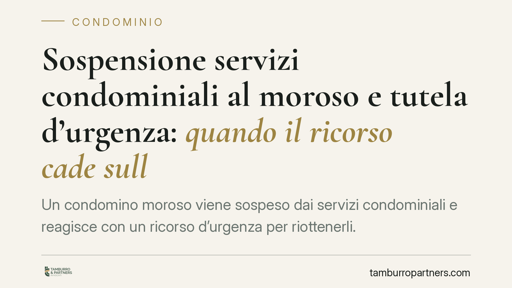

Sospensione servizi condominiali al moroso e tutela d'urgenza: quando il ricorso cade sulla forma
Un condomino moroso viene sospeso dai servizi condominiali e reagisce con un ricorso d'urgenza per riottenerli. Ma il giudice non entra nel merito: dichiara il ricorso inammissibile per un vizio di forma. Il caso, ricorrente nella prassi, mostra come la tutela cautelare possa naufragare prima ancora di affrontare la questione sostanziale sulla salute e sulla proporzionalità della sospensione.

Il caso: sospensione del servizio e ricorso d'urgenza
Una fattispecie ricorrente nel contenzioso condominiale: a fronte di una morosità, il condominio sospende un condomino dalla fruizione di un servizio comune suscettibile di godimento separato. Il condomino, lamentando un pregiudizio grave e imminente — nei casi più delicati collegato a condizioni di salute precarie — chiede al giudice un provvedimento d'urgenza per ottenere il ripristino immediato del servizio.
In casi del genere capita che il ricorso cautelare venga dichiarato inammissibile senza che il giudice esamini se la sospensione fosse o meno legittima. Non si tratta di una vittoria del condominio nel merito: la domanda non viene proprio valutata nella sua fondatezza. Cade prima, su un ostacolo formale.
Inquadramento normativo
L'art. 63, comma 3, disp. att. c.c. consente all'amministratore di sospendere il condomino moroso dalla fruizione dei servizi comuni "suscettibili di godimento separato", quando la mora si protrae per un semestre. È uno strumento di autotutela, ma non illimitato: la sospensione incontra il limite dei servizi essenziali e deve confrontarsi con il principio di proporzionalità. Quando è in gioco la salute della persona (art. 32 Cost.), il bilanciamento tra ragioni di credito del condominio e tutela dell'individuo diventa centrale, e non può essere risolto in modo automatico.
Sul versante processuale, l'art. 700 c.p.c. disciplina i provvedimenti d'urgenza: presuppone un diritto da tutelare (fumus boni iuris) e un pregiudizio grave e irreparabile nelle more del giudizio (periculum in mora). È uno strumento strumentale a un giudizio di merito. L'art. 669-octies c.p.c. distingue infatti tra misure cautelari *conservative/anticipatorie*: le prime esigono l'instaurazione del giudizio di merito a pena di inefficacia, le seconde no. Ma in entrambi i casi il ricorso deve indicare con precisione il diritto azionato e la sua strumentalità rispetto alla causa principale.
Perché il ricorso cade sulla forma
I vizi formali che conducono tipicamente all'inammissibilità di un ricorso ex art. 700 c.p.c. sono riconducibili a tre carenze — qui indicate in via esemplificativa:
- mancata individuazione del diritto di cui si chiede tutela e della futura causa di merito a cui il provvedimento accede, con conseguente difetto di strumentalità;
- omessa o generica allegazione del periculum, cioè del pregiudizio grave e irreparabile che giustifica l'urgenza;
- confusione tra tutela cautelare e tutela di merito, quando con l'urgenza si pretende in realtà una decisione definitiva sul rapporto.
Il punto è delicato: il ricorrente può avere ragione nel merito — la sospensione può essere sproporzionata, specie di fronte a condizioni di salute fragili — e tuttavia vedersi respinta la domanda per un difetto di impostazione. Il giudice, rilevato il vizio formale, non arriva nemmeno a valutare la legittimità della sospensione ex art. 63 disp. att. c.c.
Implicazioni pratiche
Per il condomino la lezione è netta: la fondatezza sostanziale non salva un ricorso mal costruito. Chi agisce in via d'urgenza deve indicare con chiarezza il diritto, il pregiudizio e la causa di merito a cui il cautelare è collegato.
Per l'amministratore la sospensione ex art. 63 non è un automatismo: deve rispettare i presupposti (mora semestrale, servizio suscettibile di godimento separato) e misurarsi con il principio di proporzionalità, soprattutto quando incide su interessi primari della persona. Una sospensione sproporzionata resta esposta a contestazione, anche se un singolo ricorso viene dichiarato inammissibile.
Cosa fare in concreto
Se sei il condomino sospeso:
- Fai individuare con precisione il diritto violato e la causa di merito a cui collegare l'eventuale ricorso d'urgenza.
- Documenta il periculum: allega prove concrete del pregiudizio grave e irreparabile, in particolare quelle di natura sanitaria.
- Verifica se la sospensione riguardi un servizio davvero suscettibile di godimento separato e non un servizio essenziale.
Se sei l'amministratore:
- Accerta i presupposti dell'art. 63 disp. att. c.c. prima di sospendere: mora semestrale e natura del servizio.
- Valuta la proporzionalità della misura rispetto alla situazione personale del moroso, raccogliendo e conservando la relativa documentazione.
Disclaimer
Contributo informativo a cura di Tamburro & Partners Avvocati - Avv. Giuseppe Tamburro. Non costituisce parere legale.
Ogni condominio ha una storia a sé.
Se gestisci un'amministrazione e vuoi un confronto su una specifica questione condominiale, scrivi allo studio. Ti rispondiamo entro un giorno lavorativo.